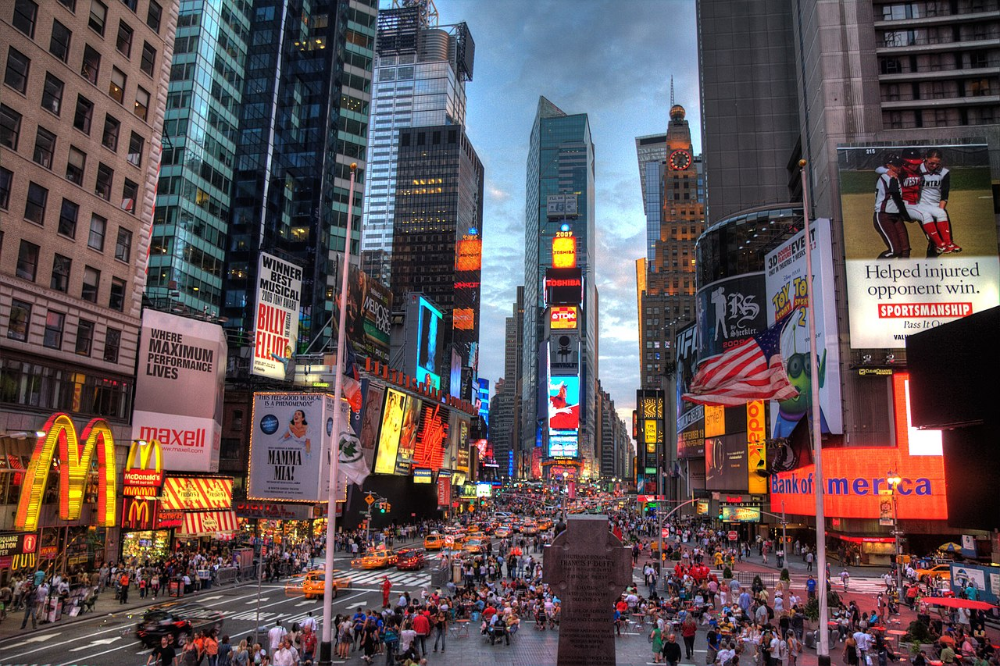
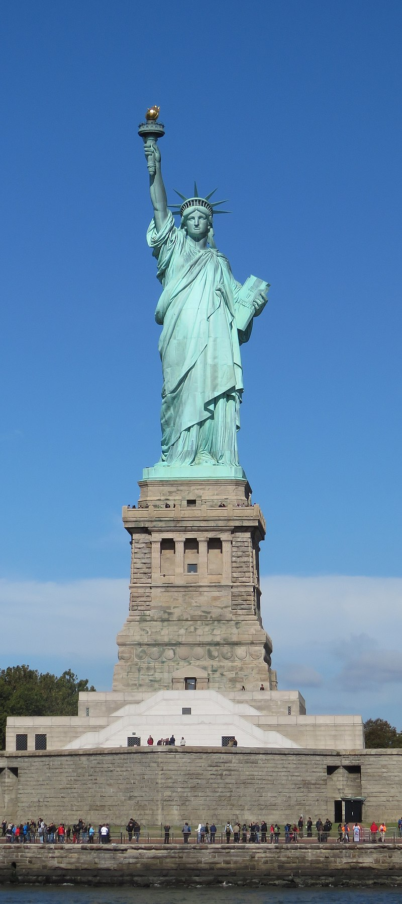
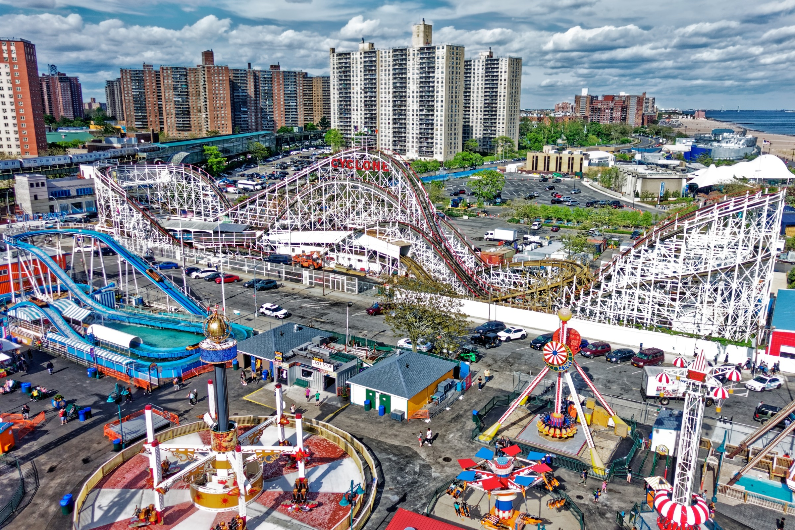
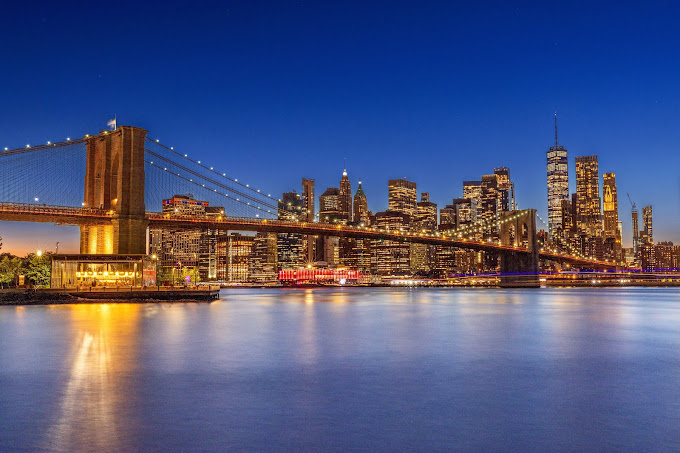

Times Square is a major commercial intersection, tourist destination, entertainment hub, and neighborhood in Midtown Manhattan, New York City, United States. It is formed by the junction of Broadway, Seventh Avenue, and 42nd Street. Together with adjacent Duffy Square, Times Square is a bowtie-shaped plaza five blocks long between 42nd and 47th Streets. Times Square is brightly lit by numerous digital billboards and advertisements as well as businesses offering 24/7 service. One of the world's busiest pedestrian areas, it is also the hub of the Broadway Theater District and a major center of the world's entertainment industry. Times Square is one of the world's most visited tourist attractions, drawing an estimated 50 million visitors annually. Approximately 330,000 people pass through Times Square daily, many of them tourists, while over 460,000 pedestrians walk through Times Square on its busiest days.The Times Square–42nd Street and 42nd Street–Port Authority Bus Terminal stations have consistently ranked as the busiest in the New York City Subway system, transporting more than 200,000 passengers daily. Formerly known as Longacre Square, Times Square was renamed in 1904 after The New York Times moved its headquarters to the then newly-erected Times Building, now One Times Square. It is the site of the annual New Year's Eve ball drop, which began on December 31, 1907, and continues to attract over a million visitors to Times Square every year, in addition to a worldwide audience of one billion or more on various digital media platforms.
The Statue of Liberty (Liberty Enlightening the World; French: La Liberté éclairant le monde) is a colossal neoclassical sculpture on Liberty Island in New York Harbor in New York City, in the United States. The copper statue, a gift from the people of France, was designed by French sculptor Frédéric Auguste Bartholdi and its metal framework was built by Gustave Eiffel. The statue was dedicated on October 28, 1886. The statue is a figure of Libertas, the Roman goddess of liberty. She holds a torch above her head with her right hand, and in her left hand carries a tabula ansata inscribed JULY IV MDCCLXXVI (July 4, 1776 in Roman numerals), the date of the U.S. Declaration of Independence. A broken chain and shackle lie at her feet as she walks forward, commemorating the national abolition of slavery following the American Civil War. After its dedication the statue became an icon of freedom and of the United States, being subsequently seen as a symbol of welcome to immigrants arriving by sea.
Central Park is an urban park between the Upper West Side and Upper East Side neighborhoods of Manhattan in New York City that was the first landscaped park in the United States. It is the fifth-largest park in the city, containing 843 acres (341 ha), and the most visited urban park in the United States, with an estimated 42 million visitors annually as of 2016. The creation of a large park in Manhattan was first proposed in the 1840s, and a 778-acre (315 ha) park approved in 1853. In 1857, landscape architects Frederick Law Olmsted and Calvert Vaux won a design competition for the park with their "Greensward Plan". Construction began the same year; existing structures, including a majority-Black settlement named Seneca Village, were seized through eminent domain and razed. The park's first areas were opened to the public in late 1858. Additional land at the northern end of Central Park was purchased in 1859, and the park was completed in 1876. After a period of decline in the early 20th century, New York City parks commissioner Robert Moses started a program to clean up Central Park in the 1930s. The Central Park Conservancy, created in 1980 to combat further deterioration in the late 20th century, refurbished many parts of the park starting in the 1980s.
.jpg)
Coney Island is a peninsular neighborhood and entertainment area in the southwestern section of the New York City borough of Brooklyn. The neighborhood is bounded by Brighton Beach to its east, Lower New York Bay to the south and west, and Gravesend to the north and includes the subsection of Sea Gate on its west. More broadly, the Coney Island peninsula consists of Coney Island proper, Brighton Beach, and Manhattan Beach. This was formerly the westernmost of the Outer Barrier islands on the southern shore of Long Island, but in the early 20th century it became a peninsula, connected to the rest of Long Island by land fill. The origin of Coney Island's name is disputed, but the area was originally part of the colonial town of Gravesend. By the mid-19th century it had become a seaside resort, and by the late 19th century, amusement parks had also been built at the location. The attractions reached a historical peak during the first half of the 20th century. However, they declined in popularity after World War II and, following years of neglect, several structures were torn down. Various redevelopment projects were proposed for Coney Island in the 1970s through the 2000s, though most of these were not carried out. The area was revitalized with the opening of the venue now known as Maimonides Park in 2001 and several amusement rides starting in the 2010s.
The Brooklyn Bridge is a hybrid cable-stayed/suspension bridge in New York City, spanning the East River between the boroughs of Manhattan and Brooklyn. Opened on May 24, 1883, the Brooklyn Bridge was the first fixed crossing of the East River. It was also the longest suspension bridge in the world at the time of its opening, with a main span of 1,595.5 feet (486.3 m) and a deck 127 ft (38.7 m) above mean high water. The span was originally called the New York and Brooklyn Bridge or the East River Bridge but was officially renamed the Brooklyn Bridge in 1915.
